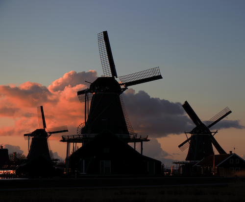

Bike Route
Countryside Bike Tour
Cycle through wide paths along old Dutch fishermen villages and past historical farms with enough cows and sheep to feed your eyes on the whole day! You will then be taken to an authentic Dutch cheese farm where you learn how cheese and clogs are made. Taste all kinds of cheeses, all included in the price. Don’t forget to take a memorable picture at the windmill! This is the ideal bike ride for learning more about the dutch countryside. This tour takes starts at 10:00 and takes 3 hours!
Website: https://www.amsterbike.eu/
Open hours:
- Mon Closed
- Tue 10:00-13:00
- Wed 10:00-13:00
- Thu 10:00-13:00
- Fri 10:00-13:00
- Sat 10:00-13:00
- Sun 10:00-13:00
Price:
- General Admission: €35,00
Location:
Piet Heinkade 11, 1018 BR